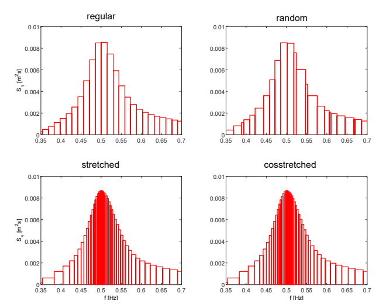
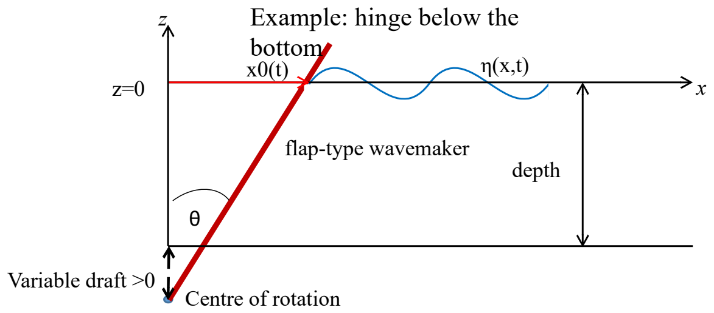
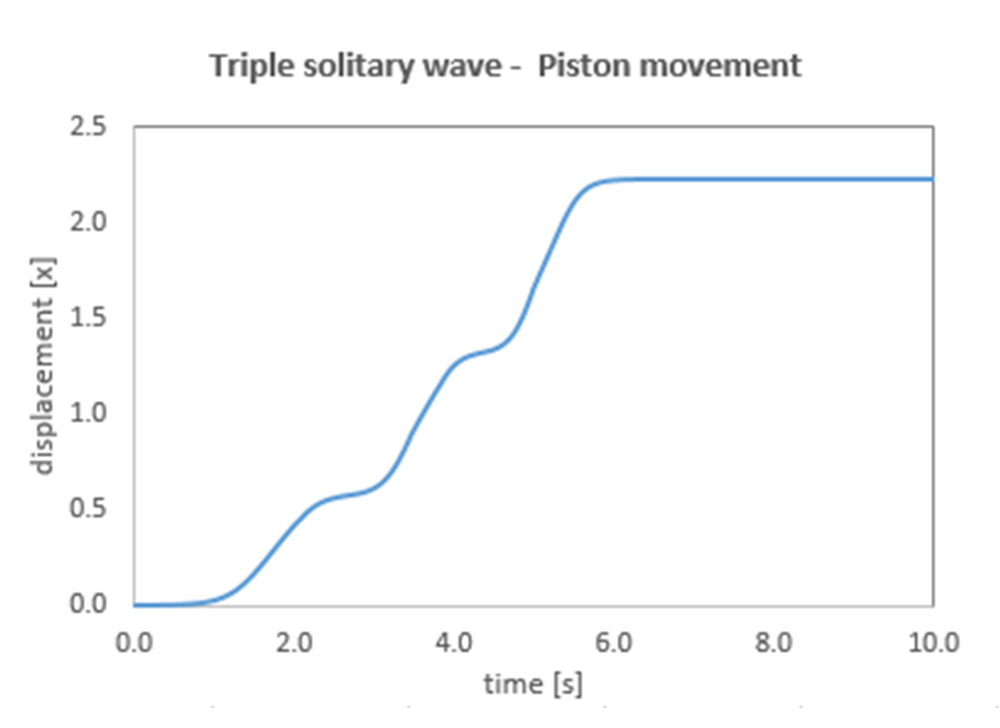
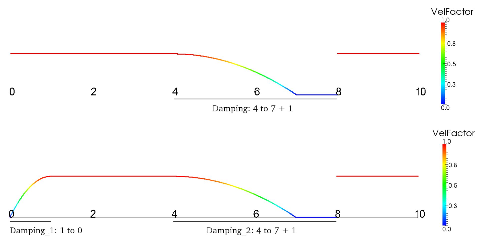
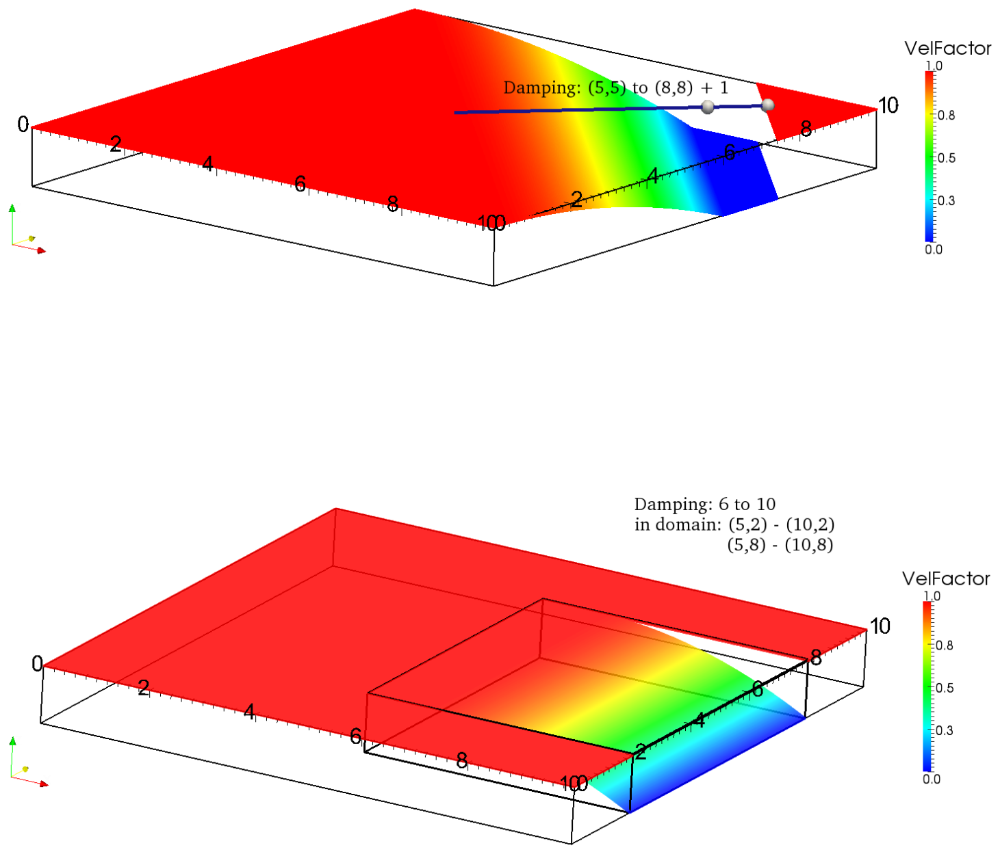

Wave Generation and Absorption¶
Under review by José Domínguez and Alex Crespo
Regular and irregular wave paddles¶
A paddle is a population of moving boundary particles. Associate it with an objreal motion entry and a null movement; the wave-generation configuration supplies its displacement. The source couples motion reference 27 with wave-paddle mkbound=27. Use the association required by the actual generated marker metadata, rather than copying an unrelated object's number.
Under special/wavepaddles, piston generates regular waves by translation and flap generates them by rotation. The corresponding irregular-wave elements are piston_spectrum and flap_spectrum. The following regular-piston fragment is taken from the distributed format reference, with its own illustrative dimensions.
<piston>
<mkbound value="10" comment="Mk-Bound of selected particles" />
<start value="0" comment="Start time (default=0)" />
<duration value="0" comment="Movement duration, Zero is the end of simulation (default=0)" />
<depth value="30" comment="Water depth (default=0)" />
<pistondir x="1" y="0" z="0" comment="Movement direction (default=(1,0,0))" />
<waveorder value="1" comment="Order wave generation 1:1st order, 2:2nd order (default=1)" />
<waveheight value="1.5" comment="Wave height" />
<waveperiod value="9.5" comment="Wave period" />
<gainstroke value="1" comment="Gain factor to amplify/reduce the paddle stroke (default=1)" />
<phase value="0" comment="Initial wave phase in function of PI (default=0)" />
<ramp value="0" comment="Periods of ramp (default=0)" />
<_usefiledata file="PistonFile_WallRegLong.csv" swlmod="-0.266916" comment="Uses displacement and elevation from file" />
<!-- Each <savemotion> line generates a different file with paddle displacement and theoretical elevation and velocity. -->
<!-- In <savemotion> when "periods" is not defined, it is automatically calculated accoding to simulation time. -->
<!-- In <savemotion> when "periodsteps" is not defined, it is automatically calculated accoding to TimeOut of simulation. -->
<savemotion xpos="0" zpos="-0.5" comment="Saves motion data. xpos and zpos are optional. zpos=-depth of the measuring point" />
<savemotion periods="24" periodsteps="20" xpos="2" zpos="-0.5" comment="Saves motion data. xpos and zpos are optional. zpos=-depth of the measuring point" />
</piston>
| Setting | Meaning |
|---|---|
mkbound |
Boundary population assigned to the paddle. |
start, duration |
Start and motion duration; the reference uses duration zero to continue to the simulation end. |
depth |
Water depth at the paddle. |
pistondir |
Translation direction for a piston. |
waveheight, waveperiod |
Height H and period T for regular waves; significant height Hs and peak period Tp for irregular waves. |
waveorder |
First- or second-order generation where provided by the selected method. The source discusses superharmonic corrections for regular waves and bound long-wave/subharmonic effects for irregular waves. |
gainstroke |
Multiplier of the calculated paddle displacement, rather than a replacement for H, T or depth. |
phase |
Initial phase in units of π where defined. |
ramp |
Initial smoothing duration in wave periods for the regular configuration. |
ramptime |
Initial ramp time for irregular generation. |
savemotion |
Save prescribed displacement and theoretical elevation/velocity at optional xpos and zpos. The source uses negative zpos for depth below still water. |
When regular-piston usefiledata is active, swlmod is added to each elevation value read from the file, in the same vertical length unit (metres in the supplied SI convention). The displacement column is separately rebased to its initial value. The _usefiledata entry above remains inactive.
Repeated savemotion entries can request different output series. Regular examples specify periods and periodsteps; irregular examples use total time and timedt. These are theoretical/prescribed signals, separate from measured solver results.
For irregular waves, spectrum selects jonswap or pierson-moskowitz. peakcoef is the JONSWAP peak-enhancement coefficient, illustrated as 3.3. waves gives the number of components used to discretise the spectrum. The source examples use 3 components to illustrate the method; the reference documents 50 as the default. A three-component teaching illustration is not a general resolution recommendation.
discretization selects regular, random, stretched or cosstretched. randomseed and the selected initial portion of the series affect repeatability. serieini, including autofit where supported, selects the initial time in the irregular train. saveserie, saveseriewaves and calcserielength provide series diagnostics. Their optional presence does not replace the actual paddle definition.
<flap_spectrum>
<mkbound value="12" comment="Mk-Bound of selected particles" />
<depth value="50" comment="Water depth (default=0)" />
<variabledraft value="0" comment="Position of the wavemaker hinge with respect to the bottom (above the bottom >0; below the bottom <0) (default=0)" />
<start value="0" comment="Start time (default=0)" />
<duration value="0" comment="Movement duration, Zero is the end of simulation (default=0)" />
<flapaxis0 x="3" y="0" z="0" comment="Point 0 of axis rotation" />
<flapaxis1 x="3" y="1" z="0" comment="Point 1 of axis rotation" />
<spectrum value="jonswap" comment="Spectrum type: jonswap, pierson-moskowitz" />
<discretization value="stretched" comment="Spectrum discretization: regular,random,stretched,cosstretched (default=stretched)" />
<waveheight value="1.5" comment="Significant Wave Height (Hs)" />
<waveperiod value="9.5" comment="Peak Period" />
<gainstroke value="1" comment="Gain factor to amplify/reduce the paddle stroke (default=1)" />
<peakcoef value="3.3" comment="Peak enhancement coefficient for JONSWAP spectrum (default=3.3)" />
<waves value="3" comment="Number of waves to create irregular waves (default=50)" />
<randomseed value="2" comment="Random seed to initialize a pseudorandom number generator" />
<serieini value="0" autofit="true" comment="Initial time in irregular wave serie (default=0 and autofit=false)" />
<ramptime value="0" comment="Time of ramp (default=0)" />
<saveserie timemin="0" timemax="300" timedt="0.05" xpos="0" comment="Saves serie data (optional)" />
<saveseriewaves timemin="0" timemax="1000" xpos="0" comment="Saves serie heights" />
<calcserielength timemax="1000" comment="Calculates serie length (optional)" />
<!-- Each <savemotion> line generates a different file with paddle displacement and theoretical elevation and velocity. -->
<!-- In <savemotion> when "time" is not defined, it is automatically calculated accoding to simulation time. -->
<!-- In <savemotion> when "timedt" is not defined, it is automatically calculated accoding to TimeOut of simulation. -->
<savemotion xpos="0.1" zpos="-0.5" comment="Saves motion data. xpos and zpos are optional. zpos=-depth of the measuring point" />
<savemotion time="10" timedt="0.02" xpos="0.1" zpos="-0.5" comment="Saves motion data. xpos and zpos are optional. zpos=-depth of the measuring point" />
</flap_spectrum>

A flap needs its rotation axis, specified by flapaxis0 and flapaxis1, and the hinge-position configuration variabledraft. Define and inspect the actual axis coordinates and water depth. A flap and a piston have different kinematics; do not reuse the piston-spectrum element for a flap merely because an older illustration carries that tag.
The source explanation says that variabledraft is the distance of the hinge above or below the bottom, with an above-bottom value below zero and a below-bottom value above zero; its diagram illustrates a hinge below the bottom. The current reference’s variabledraft comments above state the opposite sign convention (above >0, below <0). This source/reference discrepancy remains unresolved. The figure’s original sign annotation is retained; neither the examples nor the hinge geometry have been changed.

The source illustrates selecting the initial portion of an irregular train using a generated series file named WavePaddle_mkb0010_Serie.csv. That is a source example filename, not a universal filename for every paddle: inspect the generated series associated with the actual marker before choosing serieini. The selected seed, component discretisation and initial series time jointly affect the reproduced signal.
The following flap fragment preserves the current distributed reference's illustrative values and comments. It belongs under case/execution/special/wavepaddles; it is not a complete case. Marker selections, water level, axis geometry and input series must match the receiving case.
<flap>
<mkbound value="11" comment="Mk-Bound of selected particles" />
<start value="2" comment="Start time (default=0)" />
<duration value="0" comment="Movement duration, Zero is the end of simulation (default=0)" />
<depth value="1.4" comment="Water depth (default=0)" />
<variabledraft value="0" comment="Position of the wavemaker hinge with respect to the bottom (above the bottom >0; below the bottom <0) (default=0)" />
<flapaxis0 x="3" y="0" z="0" comment="Point 0 of axis rotation" />
<flapaxis1 x="3" y="1" z="0" comment="Point 1 of axis rotation" />
<waveheight value="0.1" comment="Wave height" />
<waveperiod value="5" comment="Wave period" />
<gainstroke value="1" comment="Gain factor to amplify/reduce the paddle stroke (default=1)" />
<phase value="1" comment="Initial wave phase in function of PI (default=0)" />
<ramp value="3" comment="Periods of ramp (default=0)" />
<!-- Each <savemotion> line generates a different file with paddle displacement and theoretical elevation and velocity. -->
<!-- In <savemotion> when "periods" is not defined, it is automatically calculated accoding to simulation time. -->
<!-- In <savemotion> when "periodsteps" is not defined, it is automatically calculated accoding to TimeOut of simulation. -->
<savemotion xpos="0" zpos="-0.5" comment="Saves motion data. xpos and zpos are optional. zpos=-depth of the measuring point" />
<savemotion periods="24" periodsteps="20" xpos="2" zpos="-0.5" comment="Saves motion data. xpos and zpos are optional. zpos=-depth of the measuring point" />
</flap>
The following piston_spectrum fragment preserves the current distributed reference's illustrative values and comments. It belongs under case/execution/special/wavepaddles; it is not a complete case. Marker selections, water level, axis geometry and input series must match the receiving case.
<piston_spectrum>
<mkbound value="12" comment="Mk-Bound of selected particles" />
<depth value="50" comment="Water depth (default=0)" />
<start value="0" comment="Start time (default=0)" />
<duration value="0" comment="Movement duration, Zero is the end of simulation (default=0)" />
<pistondir x="1" y="0" z="0" comment="Movement direction (default=(1,0,0))" />
<spectrum value="jonswap" comment="Spectrum type: jonswap,pierson-moskowitz" />
<discretization value="stretched" comment="Spectrum discretization: regular,random,stretched,cosstretched (default=stretched)" />
<waveorder value="1" comment="Order wave generation 1:1st order, 2:2nd order (default=1)" />
<waveheight value="1.5" comment="Significant Wave Height (Hs)" />
<waveperiod value="9.5" comment="Peak Period" />
<gainstroke value="1" comment="Gain factor to amplify/reduce the paddle stroke (default=1)" />
<peakcoef value="3.3" comment="Peak enhancement coefficient for JONSWAP spectrum (default=3.3)" />
<waves value="3" comment="Number of waves to create irregular waves (default=50)" />
<randomseed value="2" comment="Random seed to initialize a pseudorandom number generator" />
<serieini value="0" autofit="true" comment="Initial time in irregular wave serie (default=0 and autofit=false)" />
<ramptime value="0" comment="Time of ramp (default=0)" />
<saveserie timemin="0" timemax="300" timedt="0.05" xpos="0" comment="Saves serie data (optional)" />
<saveseriewaves timemin="0" timemax="1000" xpos="0" comment="Saves serie heights" />
<calcserielength timemax="1000" comment="Calculates serie length (optional)" />
<!-- Each <savemotion> line generates a different file with paddle displacement and theoretical elevation and velocity. -->
<!-- In <savemotion> when "time" is not defined, it is automatically calculated accoding to simulation time. -->
<!-- In <savemotion> when "timedt" is not defined, it is automatically calculated accoding to TimeOut of simulation. -->
<savemotion xpos="0.1" zpos="-0.5" comment="Saves motion data. xpos and zpos are optional. zpos=-depth of the measuring point" />
<savemotion time="10" timedt="0.02" xpos="0.1" zpos="-0.5" comment="Saves motion data. xpos and zpos are optional. zpos=-depth of the measuring point" />
</piston_spectrum>
Single and multiple solitary waves¶
piston_solitary supports the source's Rayleigh/Serre, Boussinesq/Goring and KdV/Clamond–Germain generation choices, identified by theory values 1, 2 and 3. The distributed reference documents theory 2 as the default. Specify the actual height, depth, direction and movement duration coefficient.
The source's first solitary wave has depth 0.4 m and height 0.12 m. Its three-wave illustration adds height 0.18 m and 0.24 m waves with startcoef2=0.6 and startcoef3=0.6. waves is the number of solitary waves. Numbered startcoef, durationcoef and waveheight elements apply to subsequent waves, with the inheritance rules documented in the reference. savemotion writes the imposed movement and theoretical elevation; its optional xpos selects the elevation point.
<piston_solitary>
<mkbound value="10" comment="Mk-Bound of selected particles" />
<theory value="1" comment="Theory of generation 1:Rayleigh (Serre 1953), 2: Boussinesq (Goring 1978) 3: KdV (Clamond and Germain 1999) (def=2)" />
<start value="0" comment="Start time (def=0)" />
<depth value="0.14" comment="Water depth" />
<pistondir x="1" y="0" z="0" comment="Movement direction (def=(1,0,0))" />
<durationcoef value="1" comment="Coefficient of movement duration (def=1)" />
<waveheight value="0.05" comment="Wave height" />
<waves value="3" comment="Number of solitary waves (def=1)" />
<startcoef2 value="0.8" comment="Defines start of next wave according to period of previous wave. (def=1)" />
<_durationcoef2 value="1.1" comment="Coefficient of movement duration for 2nd wave (def=value of previous wave)" />
<waveheight2 value="0.07" comment="Wave height for 2nd wave (def=value of previous wave" />
<startcoef3 value="0.7" comment="Defines start of next wave according to period of previous wave. (def=value of previous wave)" />
<_durationcoef3 value="1.1" comment="Coefficient of movement duration for 3rd wave (def=value of previous wave)" />
<_waveheight3 value="0.05" comment="Wave height for 3rd wave (def=value of previous wave" />
<!-- Each <savemotion> line generates a different file with paddle displacement and theoretical elevation. -->
<!-- In <savemotion> when "time" is not defined, it is automatically calculated accoding to simulation time. -->
<!-- In <savemotion> when "timedt" is not defined, it is automatically calculated accoding to TimeOut of simulation. -->
<savemotion xpos="10" comment="Saves motion data. xpos is optional for elevation calculation" />
<savemotion time="16" timedt="0.02" xpos="18" comment="Saves motion data. xpos is optional for elevation calculation" />
</piston_solitary>

Active wave absorption¶
awas_zsurf adds feedback absorption to a regular or irregular piston moving in X+, as restricted by the distributed reference. It measures the free surface near the paddle and adjusts the motion. It is not the same as passive damping or relaxation-zone absorption.
| Setting | Interpretation |
|---|---|
startawas |
Start of feedback correction; the reference relates its default to start, ramp and wave period. |
swl |
Still-water surface Z coordinate in the case reference frame. |
elevation |
Order used for the theoretical elevation. |
gaugex |
X distance from piston to measurement: value in metres, or the documented alternative valueh or valuedp. Use one definition. |
gaugey, gaugezmin, gaugezmax |
Measurement location and vertical search limits; the lower point must lie in water. |
gaugedp |
Measurement spacing as a multiple of particle dp. |
savedata |
Diagnostic output: reference values 1 per PART, 2 more information, 3 per time step. |
limitace |
Limits corrective acceleration; zero disables that limit. |
correction |
Optional drift correction, using stroke, period and power-function coefficients. |
The source explains drift correction as compensation when displacement exceeds a configured multiple of the piston stroke, applied over the configured number of periods. It is not a replacement for correctly setting the still-water level.
<awas_zsurf>
<startawas value="0" comment="Time to start AWAS correction (default=start+ramp*waveperiod)" />
<swl value="0.266" comment="Still water level (free-surface water)" />
<elevation value="2" comment="Order wave to calculate elevation 1:1st order, 2:2nd order (default=2)" />
<gaugex value="0.05" comment="Position in X from piston to measure free-surface water (default=5*Dp)" />
<gaugey value="1" comment="Position in Y to measure free-surface water" />
<gaugezmin value="0.05" comment="Minimum position in Z to measure free-surface water, it must be in water (default=domain limits)" />
<gaugezmax value="0.5" comment="Maximum position in Z to measure free-surface water (default=domain limits)" />
<gaugedp value="0.25" comment="Resolution to measure free-surface water, it uses Dp*gaugedp (default=0.1)" />
<savedata value="1" comment="Saves CSV with information 1:by part, 2:more information, 3:by step (default=0)" />
<limitace value="2" comment="Factor to limit maximum value of acceleration, with 0 disabled (default=2)" />
<correction coefstroke="1.8" coefperiod="1" powerfunc="3" comment="Drift correction configuration (default=no applied)" />
</awas_zsurf>
Passive damping¶
Damping reduces particle velocity progressively in a configured region. limitmin and limitmax define the direction from minimum to maximum reduction. overlimit extends the maximum-reduction region; redumax scales the strength. factorxyz permits component-dependent damping, and an optional domain restricts the region. The current reference also supplies box and cylinder damping alternatives.
For the source plane-aligned example, the velocity update and reduction function are:
Here x is position along the damping direction, x0 and x1 are the limit positions, β is the reduction strength and Δt is the time step. For an oblique zone, interpret the direction using its defining points rather than applying the X-only illustration to another coordinate unchanged.
<dampingzone>
<limitmin x="4" y="0" z="0" comment="Location where minimum reduction is applied" />
<limitmax x="4.5" y="0" z="0" comment="Location where maximum reduction is applied" />
<overlimit value="1" comment="The scope of maximum reduction over limitmax (default=0)" />
<redumax value="10" comment="Maximum reduction in location limitmax (default=10)" />
<factorxyz x="1" y="1" z="1" comment="Application factor in components (default x=1,y=1,z=1)" />
<domain zmin="-1.2" zmax="0" comment="Box domain to apply damping (default=all domain)">
<point1 x="5" y="2" />
<point2 x="10" y="2" />
<point3 x="10" y="8" />
<point4 x="5" y="8" />
</domain>
</dampingzone>
The upper plot shows one X-direction damping zone from X=4 to 7 with an overlimit of 1, maximum reduction 10, and unit component factors. The lower plot combines two independent zones: the same 4-to-7 zone with overlimit 1, and a 1-to-0 zone with overlimit 0. These are source examples under case/execution/special, distinct from the earlier current-reference configuration.
<!-- Upper plot -->
<special>
<damping>
<dampingzone>
<limitmin x="4" y="0" z="0" comment="Location where minimum reduction is applied"/>
<limitmax x="7" y="0" z="0" comment="Location where maximum reduction is applied"/>
<overlimit value="1" comment="The scope of maximum reduction over limitmax (default=0)"/>
<redumax value="10" comment="Maximum reduction in location limitmax (default=10)"/>
<factorxyz x="1" y="1" z="1" comment="Application factor in components (default x=1,y=1,z=1)"/>
</dampingzone>
</damping>
</special>
<!-- Lower plot: alternative -->
<special>
<damping>
<dampingzone>
<limitmin x="4" y="0" z="0" comment="Location where minimum reduction is applied"/>
<limitmax x="7" y="0" z="0" comment="Location where maximum reduction is applied"/>
<overlimit value="1" comment="The scope of maximum reduction over limitmax (default=0)"/>
</dampingzone>
<dampingzone>
<limitmin x="1" y="0" z="0" comment="Location where minimum reduction is applied"/>
<limitmax x="0" y="0" z="0" comment="Location where maximum reduction is applied"/>
<overlimit value="0" comment="The scope of maximum reduction over limitmax (default=0)"/>
</dampingzone>
</damping>
</special>

The upper source plot damps along the oblique direction from (5,5,0) to (8,8,0), with overlimit 1. The lower plot damps from (6,0,0) to (10,0,0) with no overlimit and restricts the operation to the footprint (5,2), (10,2), (10,8), (5,8), between Z=0 and Z=10. In the old screenshot all four footprint children are named point; the current reference above names them point1–point4. Those spellings are recorded without asserting automatic compatibility. The lower source rows are retained as editable data, and the upper fragment uses the currently documented limit elements.
| Lower source row | Original attributes / comment |
|---|---|
limitmin |
x="6" y="0" z="0"; “Location where minimum reduction is applied” |
limitmax |
x="10" y="0" z="0"; “Location where maximum reduction is applied” |
overlimit |
value="0"; “The scope of maximum reduction over limitmax (default=0)” |
domain |
zmin="0" zmax="10"; “Box domain to apply damping (default=all domain)” |
point, in order |
(5,2), (10,2), (10,8), (5,8) |
<damping>
<dampingzone>
<limitmin x="5" y="5" z="0" comment="Location where minimum reduction is applied"/>
<limitmax x="8" y="8" z="0" comment="Location where maximum reduction is applied"/>
<overlimit value="1" comment="The scope of maximum reduction over limitmax (default=0)"/>
</dampingzone>
</damping>

Multi-layer pistons and external coupling¶
Multi-layer pistons impose different horizontal velocities on boundary layers using externally supplied data. The source describes one-way offline coupling: the external wave-propagation model provides the velocities; this arrangement does not imply a simultaneous two-way exchange.
mlayerpistons/piston1d specifies the paddle marker, filevelx, vertical offset incz, time offset timedataini and smoothing level. The CSV needs time, the Z positions of layers and their velocities. Align the still-water reference of the two models using the intended vertical offset. Smoothing acts along the layers and should not be confused with a different physical velocity profile. The distributed reference also provides a piston2d arrangement with Y-positioned datasets and separate Y/Z smoothing.
<piston1d>
<mkbound value="10" comment="Mk-Bound of selected particles" />
<filevelx value="AwaReg1L_velx_x10_y00.csv" comment="File name with X velocity" />
<incz value="0" comment="Z offset (def=0)" />
<timedataini value="0" comment="Time offset (def=0)" />
<smooth value="5" comment="Smooth motion level (def=0)" />
</piston1d>
In the source explanation, smooth controls the number of neighbouring particles used for a smoothing average along Z, reducing discontinuities between the imposed layer velocities. It is a spatial smoothing choice, distinct from the CSV time coordinate or the offset between the two still-water reference systems.
Relaxation zones¶
Relaxation zones impose or blend a target velocity field over a finite width of fluid, rather than moving a solid paddle. Their center and width define the zone, coefdir selects component coefficients, coefdt scales the time-dependent application and function psi/beta supplies the weighting-function parameters. Drift correction is a separate option derived from the wave formulation, not an automatic guarantee of zero mean flow.
| Current element | Target field and main inputs |
|---|---|
rzwaves_regular |
Regular-wave field: height, period, order, depth, swl, phase and ramp. |
rzwaves_spectrum |
Irregular field: spectrum, discretisation, Hs, Tp, component count, seed and initial series time. |
rzwaves_external_1d |
External velocity files, file index/count, optional vertical velocity, coordinate shift, vertical data spacing and smoothing. |
rz_uniform |
Uniform or time-dependent velocity in a domainbox. |
rz_meshdata |
Current reference alternative using sampled mesh data; distinct from the older one-dimensional external-file arrangement. |
The source regular-wave example uses H=0.16 m, T=2 s, depth=swl=0.7 m and width=0.2 m. Its irregular example uses 1024 components, rather than the three-component paddle illustration. Those configurations must not be merged into a single supposedly equivalent wave field.
<rzwaves_regular>
<start value="0" comment="Start time (default=0)" />
<duration value="0" comment="Movement duration, Zero is the end of simulation (default=0)" />
<waveorder value="2" comment="Order wave generation 1:1st order, 2:2nd order (default=1)" />
<waveheight value="0.16" comment="Wave height" />
<waveperiod value="2" comment="Wave period" />
<depth value="0.7" comment="Water depth for wave generation" />
<swl value="0.7" comment="Still water level (free-surface)" />
<center x="0" y="0" z="0" comment="Central point of application" />
<width value="0.2" comment="Width for generation" />
<phase value="0" comment="Initial wave phase in function of PI (default=0)" />
<ramp value="1" comment="Periods of ramp (default=0)" />
<savemotion periods="24" periodsteps="20" xpos="13" zpos="-0.5" comment="Saves motion data. xpos and zpos are optional. zpos=-depth of the measuring point" />
<coefdir x="1" y="0" z="0" comment="Coefficients for each direction (default=(1,0,0))" />
<coefdt value="1000" comment="Multiplies by dt value in the calculation (using 0 is not applied) (default=1000)" />
<function psi="0.9" beta="1" comment="Coefficients in funtion for velocity (def. psi=0.9, beta=1)" />
<driftcorrection value="1.0" comment="Coefficient of drift correction applied in velocity X. 0:Disabled, 1:Full correction (def=0)" />
</rzwaves_regular>
For offline coupling, filesvel is the base name of the velocity files and filesvelx initial/count selects their range. movedata changes the data coordinates; dpz specifies vertical spacing, smooth the smoothing level and usevelz whether vertical velocities are included. Depth and swl are required when using the associated drift correction. driftinitialramp delays that correction. The presentation describes producing the external velocity CSVs from SWASH output with ReadSwash2; the actual external files and their time coverage remain prerequisites.
For a uniform zone, the current element is rz_uniform, with a domainbox containing point, size, direction and optional rotation axis. A velocitytimes series takes precedence over the constant velocity entry. Its source sequence is (time, velocity): (0,0), (2,0.5), (4,0), (5,0), (7,0.4), using seconds and m/s. The reference's coefdt=1000 and psi=0.9, beta=1 are documented configuration values; their presence must not be confused with the wave-paddle settings.
<rzwaves_external_1d>
<start value="0" comment="Start time (def=0)" />
<duration value="0" comment="Movement duration, Zero is the end of simulation (def=0)" />
<depth value="0.7" comment="Water depth. It is necessary for drift correction (def=0)" />
<swl value="0.7" comment="Still water level (free-surface). It is necessary for drift correction (def=0)" />
<filesvel value="SgWave4i3L_corr" comment="Main name of files with velocity to use" />
<filesvelx initial="2" count="5" comment="First file and count to use" />
<usevelz value="false" comment="Use velocity in Z or not (def=false)" />
<movedata x="1" y="0" z="0" comment="Movement of data in CSV files" />
<dpz valuedp="1" comment="Distance between key points in Z (def=2)" />
<smooth value="5" comment="Smooth motion level (def=0)" />
<center x="0" y="0" z="0" comment="Central point of application" />
<width value="0.2" comment="Width for generation" />
<coefdir x="1" y="0" z="0" comment="Coefficients for each direction (default=(1,0,0))" />
<coefdt value="1000" comment="Multiplies by dt value in the calculation (using 0 is not applied) (default=1000)" />
<function psi="0.9" beta="1" comment="Coefficients in funtion for velocity (def. psi=0.9, beta=1)" />
<driftcorrection value="1.0" comment="Coefficient of drift correction applied in velocity X. 0:Disabled, 1:Full correction (def=0)" />
<driftinitialramp value="10" comment="Ignore waves from external data in initial seconds (def=0)" />
</rzwaves_external_1d>
<rz_uniform>
<start value="0" comment="Start time (default=0)" />
<duration value="0" comment="Duration, Zero is the end of simulation (default=0)" />
<domainbox>
<point x="0.3" y="-0.05" z="0" />
<size x="0.4" y="0.1" z="0.2" />
<direction x="-1" y="0" z="0" />
<rotateaxis angle="-45" anglesunits="degrees">
<point1 x="0.3" y="0" z="0" />
<point2 x="0.3" y="1" z="0" />
</rotateaxis>
</domainbox>
<velocity value="0.3" comment="Velocity to impose (it is ignored when velocitytimes is defined)" />
<velocitytimes comment="Uniform velocity in time">
<timevalue time="0.0" v="0" />
<timevalue time="2.0" v="0.5" />
<timevalue time="4.0" v="0" />
<timevalue time="5.0" v="0" />
<timevalue time="7.0" v="0.4" />
</velocitytimes>
<coefdt value="1000" comment="Multiplies by dt value in the calculation (using 0 is not applied) (default=1000)" />
<function psi="0.9" beta="1" comment="Coefficients in funtion for velocity (def. psi=0.9, beta=1)" />
</rz_uniform>
The source derives its wave drift correction from Stokes' second-order theory. driftcorrection weights that correction and driftinitialramp delays its application in the external-data configuration; neither is a replacement for the supplied wave field. Its external-file naming example is SgWave4i3L_corr_velz_xNN_yMM, with the file indices chosen through filesvelx. The source names ReadSwash2_win64.exe for converting SWASH output to the input CSV series. Time coverage, variable definitions and coordinates must match the receiving case.
The following rzwaves_spectrum fragment preserves the current distributed reference's illustrative values and comments. It belongs under case/execution/special/relaxationzones; it is not a complete case. Marker selections, water level, axis geometry and input series must match the receiving case.
<rzwaves_spectrum>
<start value="0" comment="Start time (def=0)" />
<duration value="0" comment="Movement duration, Zero is the end of simulation (def=0)" />
<spectrum value="jonswap" comment="Spectrum type: jonswap,pierson-moskowitz" />
<peakcoef value="3.3" comment="Peak enhancement coefficient for JONSWAP spectrum (default=3.3)" />
<discretization value="stretched" comment="Spectrum discretization: regular,random,stretched,cosstretched (default=stretched)" />
<waveorder value="1" comment="Order wave generation 1:1st order, 2:2nd order (default=1)" />
<waveheight value="0.1" comment="Significant Wave Height" />
<waveperiod value="3" comment="Peak Period" />
<waves value="1024" comment="Number of waves to create irregular waves (default=50)" />
<randomseed value="2" comment="Random seed to initialize a pseudorandom number generator" />
<depth value="0.7" comment="Water depth for wave generation" />
<swl value="0.7" comment="Still water level (free-surface)" />
<center x="0" y="0" z="0" comment="Central point of application" />
<width value="0.2" comment="Width for generation" />
<ramptime value="0" comment="Time of initial ramp (default=0)" />
<serieini value="0" comment="Initial time in irregular wave serie (default=0)" />
<savemotion time="50" timedt="0.1" xpos="14" zpos="-0.5" comment="Saves motion data. xpos and zpos are optional. zpos=-depth of the measuring point" />
<saveserie timemin="0" timemax="1000" timedt="0.1" xpos="0" comment="Saves serie data (optional)" />
<saveseriewaves timemin="0" timemax="1000" xpos="0" comment="Saves serie heights" />
<_calcserielength timemax="1000" comment="Calculates serie length (optional)" />
<coefdir x="1" y="0" z="0" comment="Coefficients for each direction (default=(1,0,0))" />
<coefdt value="1000" comment="Multiplies by dt value in the calculation (using 0 is not applied) (default=1000)" />
<function psi="0.9" beta="1" comment="Coefficients in funtion for velocity (def. psi=0.9, beta=1)" />
<driftcorrection value="1.0" comment="Coefficient of drift correction applied in velocity X. 0:Disabled, 1:Full correction (def=0)" />
</rzwaves_spectrum>